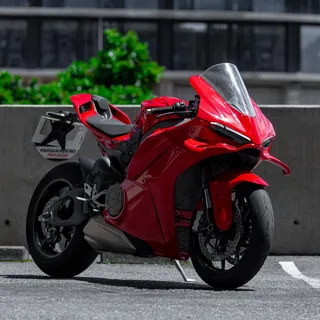
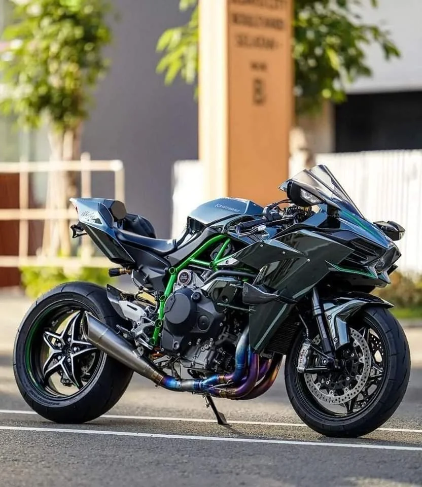
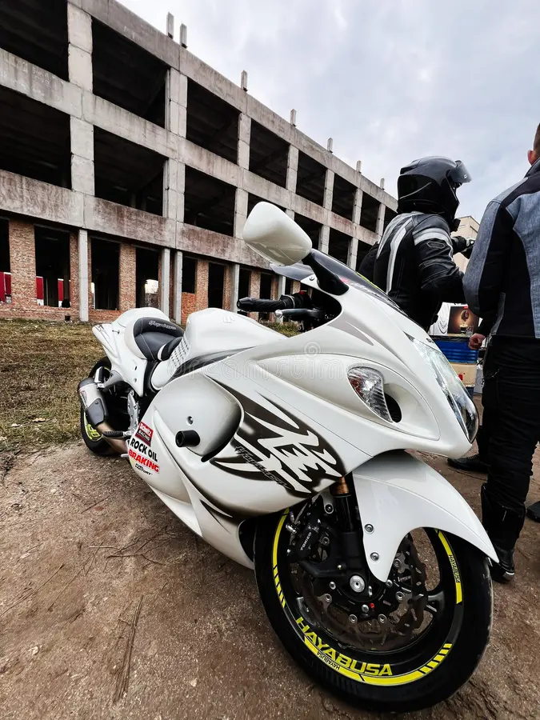

La Ducati Panigale V4 (especialmente la versión 2025) es una superbike de vanguardia que transfiere tecnología directa de MotoGP a la calle. Con un motor Desmosedici Stradale V4 de cc, entrega CV (aumentable a CV).

La Kawasaki Ninja H2 es una motocicleta hiperdeportiva de calle, icónica por ser la primera en producción con motor sobrealimentado (supercharger). Ofrece unos 200-240 CV de potencia con un motor 998cc.

La Suzuki Hayabusa (GSX1300R) es una icónica motocicleta deportiva de alto rendimiento, famosa por ser la primera moto de producción en superar los , alcanzando más de en su lanzamiento en 1999. Su nombre significa "halcón peregrino" en japonés.
